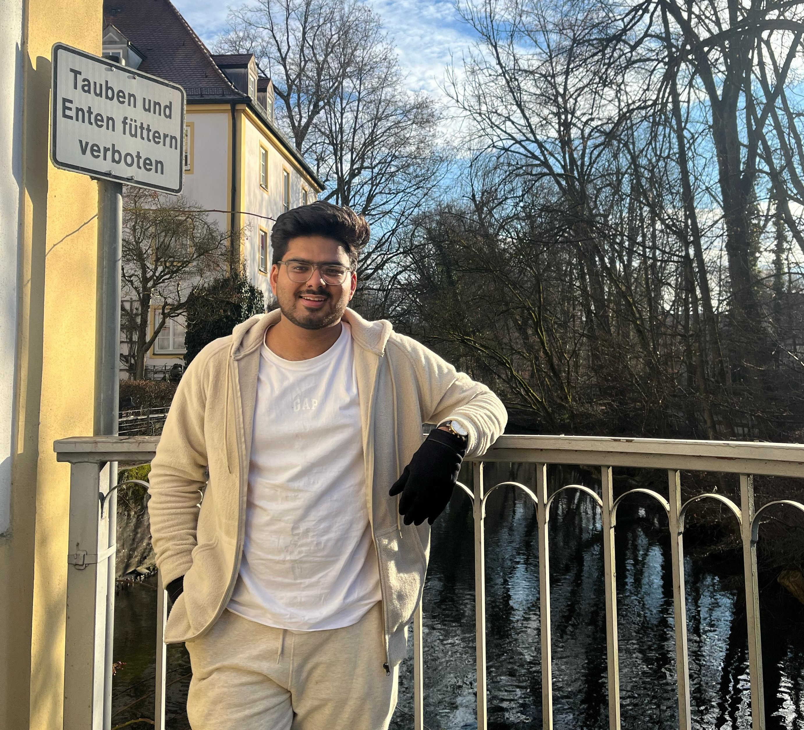
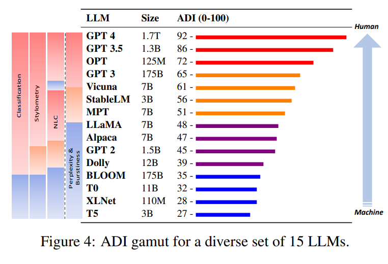
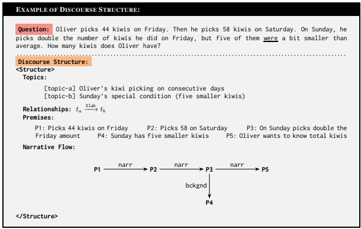
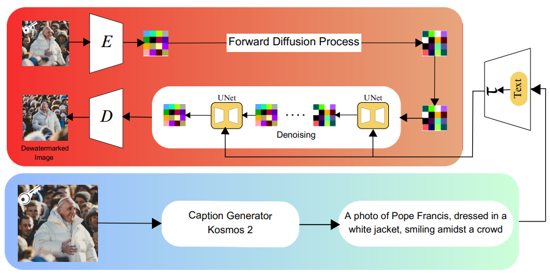

|
Krish Sharma I'm an undergraduate researcher at the National Institute of Technology Silchar, India, exploring Natural Language Processing and Artificial Intelligence. My work focuses on improving numerical understanding and efficient embedding in language models. I've collaborated with IRIT Lab on NLP advancements and previously contributed to research at the University of South Carolina's AIISC lab. As for life beyond LLMs—well, that's a different equation altogether. After all, as the Matrix suggests, reality is just a set of mathematical probabilities waiting to be observed. life ∉ work |
 |
{kind=link}
Area of WorkI work on enhancing numerical reasoning in smaller, accessible language models, focusing on evaluation, improvement, number encoding, and tokenization. I'm also interested in integrating this with human-computer interaction. |
Work ExperienceResearch Intern - Institut de Recherche en Informatique de Toulouse (France)On-Site | Current Working on advancing numerical reasoning capabilities in language models, with a focus on:
Research Intern - Artificial Intelligence Institute, University of South CarolinaRemote | 2023
|
Research
|

|
Counter Turing Test (CT2): AI-Generated Text Detection is Not as Easy as You May Think
EMNLP 2023 (Outstanding Paper Award) A comprehensive study on AI-generated text detection, introducing the novel AI Detectability Index (ADI). |
|

|
DIMSUM: Discourse in Mathematical Reasoning as a Supervision Module
Submitted to ACL 2025 Introduced discourse structure as a novel supervision signal for mathematical reasoning, demonstrating up to 160% performance improvement for Llama2 13b on GSM8k. Our approach significantly enhances model performance on out-of-distribution examples, even for large pre-trained models. |
|

|
The Brittleness of Image Watermarking Techniques: Investigating Visual Paraphrasing for De-Watermarking AI-Generated Images
Submitted to ICCV 2025 Demonstrated the vulnerability of AI-generated image watermarking to visual paraphrase attacks, introducing a novel dataset and method to remove watermarks, highlighting the need for more robust watermarking techniques. |

|
Addressing Hate Speech: ATLANTIS for Efficient Hate Span Detection
CEUR Workshop 2023 (Second Prize) Introduced ATLANTIS, an innovative transformer-based approach for precise hate speech detection and classification. |

|
A transformer-based approach to automate disease prediction from patient descriptions
IEEE CICT 2023 Developed a novel approach for automated disease prediction using transformer models on patient-described symptoms. |